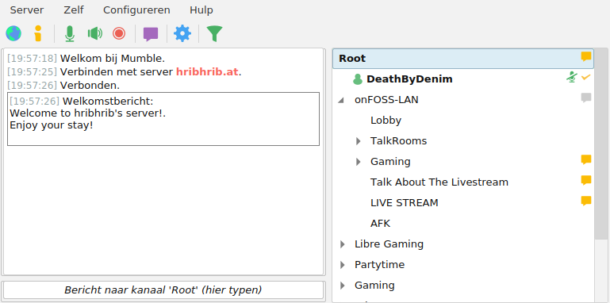
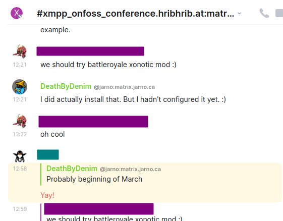
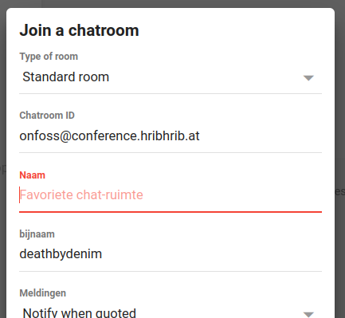

Mumble is free and open source software that can be download from Mumble.info. It is a low-latency voice client that lets you talk to your fellow players using your microphone.
After installation, you will need to configure your audio first. The helpful audio wizard will guide your through the settings.
Once that is all set up, you can connect to the Mumble server by using the mumble link from the Home page. You should be able to connect and see something like this:
By default, you will be place in the Root, but you can double-click on any channel to join. You will most likely want to go to the Lobby, however, you can see which channels the other people hang out in. Note that there will likely only be people here during the actual event.
For text-based chatting, there is the Matrix channel. Matrix is a chat protocol (amongst other things). To use the Matrix protocol, you will need a client to connect to it. One of the most popular ones is called Element which you can either download from element.io or just run in your browser. If you don't have an account yet, you will be able to create one.
Once you are logged in, you can follow the Matrix link on the Home page. It will take you to a page asking about the application you want to use. If you downloaded Element before, click on the Continue button for that. You should be able to connect and see something like this:
There are usually people here, even outside of the event.
Another option for text-based chatting is XMPP. It's another protocol, like Matrix but you can use it to join the same chat channel as above. The two protocols are "bridged" which means that users can simply talk to eachother despite using different protocols.
Like the Matrix protocol, there are also many XMPP chat clients available. One of the easier ones it Movim.eu. It allows you to easily create and account if you don't already have an XMPP account.
From there, you can start the web-based client at mov.im. After logging in, choose "chats" and then click on the big plus symbol.

In the new screen that pops up, you will find "Join a chatroom" and then "Join a custom chatroom". Paste the room name from the link on the Home page. You can type anything you want in the Name field. That's only visible for you as the name of this room.
There are usually people here, even outside of the event.
Each game has their own separate help page